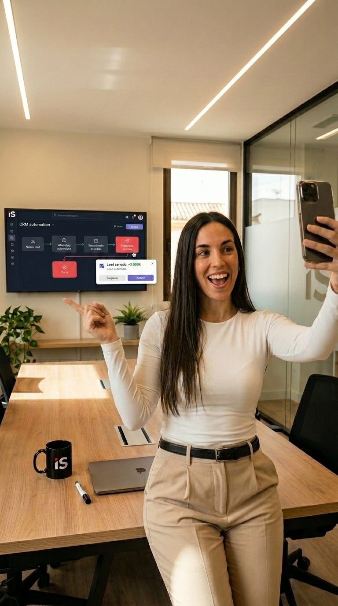

Anuncio Vídeo Final Acabado
Fotogramas Clave de Referencia (Prompts Ancla)

marcas/inteligencia-sevilla/marca.md
Inteligencia Sevilla (IS)
- Alias / cómo la llama el usuario:
is,IS,inteligencia sevilla,consultora - Sector: consultoría de IA para PYMEs (Sevilla)
- Web / CTA: inteligenciasevilla.com — auditoría gratuita de 3 horas
- Tono: experto, cercano, sin tecnicismos ("sin humo")
Identidad visual
Símbolo: letras "IS" en cromo plateado dentro de esfera facetada con luz roja/circuitos.
Acento de color: rojo carmesí #C8102E + cromo metálico + dorado/ámbar.
Mundo de marca: dos capas — (a) escenas lifestyle cálidas (oficina luz cálida, beige/crema) y (b) brand cards oscuras tech (red dorada + chrome IS).
Logos (logos/)
IS_logo_alta_calidad_4K-red-vector.png— principal recomendado para end card de vídeos.logo-inteligencia-sevilla-IS-ia.png— IS sobre fondo de red dorada (brand card).logo-IS-inteligencia-sevilla-black-alpha.jpg— IS oscuro sobre fondo claro.
Campaña Consultoría de IA sin Humo
Este proyecto representa la identidad visual cerrada del laboratorio: ambientes de oficina luminosos y cálidos en tonos crema, que contrastan con los cierres corporativos (brand cards) en un universo de partículas y redes doradas.
Fórmulas de Prompts Utilizadas
Three young professionals (two men in navy shirts, one woman in cream top) sitting around an dark oak meeting table in a modern glass-walled office...A young Spanish female presenter with long dark hair, wearing a beige cream ribbed knit top, pointing with her hand...A young female consultant in a cream top using a laptop on a wooden counter inside a bright, modern dog grooming salon...Vertical 9:16 talking-head video. A young Spanish woman with long dark hair, wearing a cream ribbed knit top, speaking confidently...Montaje en CapCut
- **0.0 - 3.0s (Hook):** Rótulo central: `BASTA DE PROMESAS IA SIN SENTIDO` - **3.0 - 7.0s (Giro):** Rótulo central: `AUDITAMOS TU NEGOCIO EN 3 HORAS GRATIS` - **7.0 - 10.0s (Cierre):** Rótulo central: `INTELIGENCIA SEVILLA. IA QUE FACTURA.` - **Voz en Off:** *"¿Cansado del humo de la IA? Analizamos tus procesos y creamos automatizaciones reales. Pide tu auditoría de 3 horas gratuita en inteligenciasevilla.com."*
Lecciones de este Proyecto
Este proyecto enseña cómo estructurar un ADN de marca completo y aplicarlo de forma coherente en diferentes formatos publicitarios.
- Evitar Clichés Tecnológicos: La guía de marca prohíbe el uso de fondos azules eléctricos futuristas u hologramas tridimensionales. La IA es tratada como una herramienta práctica e integrada en una oficina luminosa con madera.
- Branding Orgánico: Las tazas de café negras con el logo plateado o la TV trasera de la sala son métodos elegantes para incorporar la marca tridimensionalmente sin recurrir a costosas post-producciones de rotulación digital.
- Doble Capa Visual: Escenas del día a día cálidas (beige/crema) que resuelven en brand cards oscuras tech con mallas doradas.